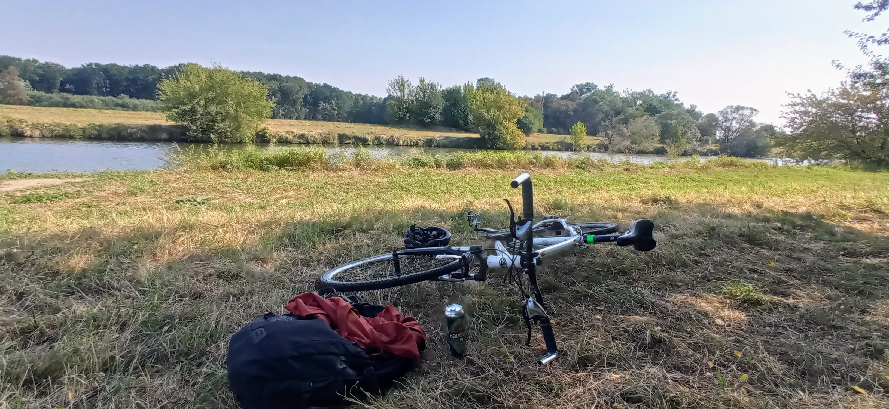

Alchymie: Kompostujeme a tlíme
O domácím kompostu, zahradě a životním cyklu hmoty
Archiv textů o pohybu, zahradě, místě a pomalejším životě.
O domácím kompostu, zahradě a životním cyklu hmoty

Dnes jsem na své oblíbené potulkové trase objevil žluté čtverečky.

Včera se mi cestou na kole z nákupu podařilo zastavit na hezkém místě u řeky. Původně jsem si tady chtěl zacvičit jógu, ale nakonec jsem si dal jen plechovku piva, seděl jsem a koukal na řeku.

Poslední dobou moc neběhám ani nejezdím na kole. Obě pohybové aktivity jsem nahradil Nordic Walkingem, tedy chůzí s hůlkama. Ale ne, není to ta důchodcovská varianta chůze s oporou o hůlky (i když proti té nic).

Přivedly mě na to úvahy o modrých zónách. Století lidé na Okinawě žijí klidně, skromně, hodně se hýbou a nepodceňují společenský život. Co je ale zajímavé, mají obvykle jen malý soukromý prostor (což je Japonsku ostat...

O energetické investici do místa a tom, jak vám místo začne vracet energii zpět

Jak jsme vyráběli biouhel ze zahradního odpadu

Podzimní bilancování zahrady a přípravy na zimu
as time goes by 1 cesty 1 doma 2 experimenty 2 lifespan 5 pohyb 1 ultreia 4 werkzeug 1 zahrada 2